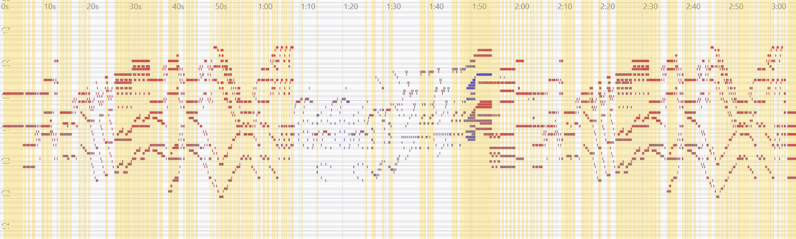
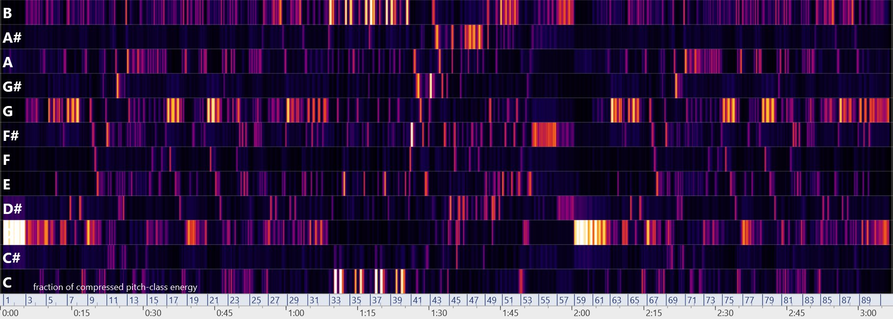
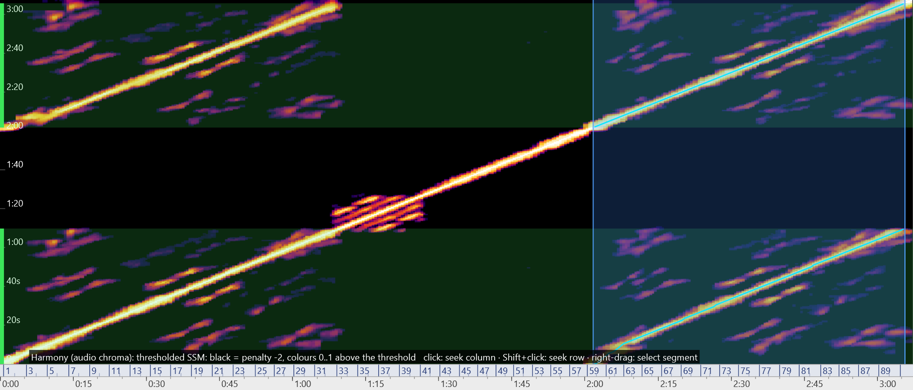
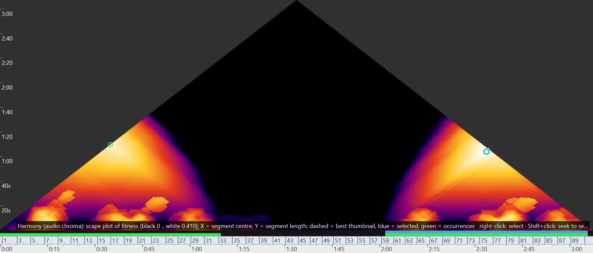
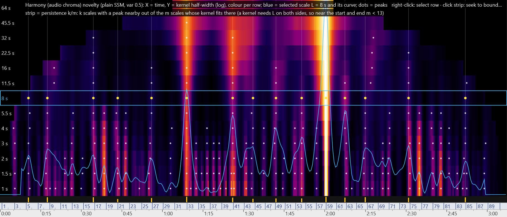
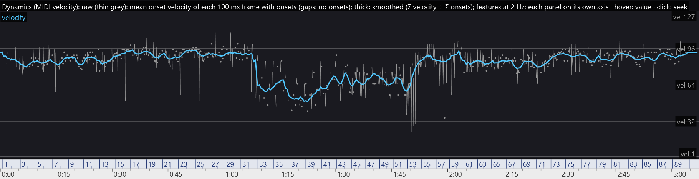
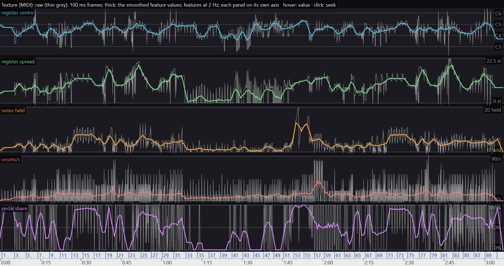
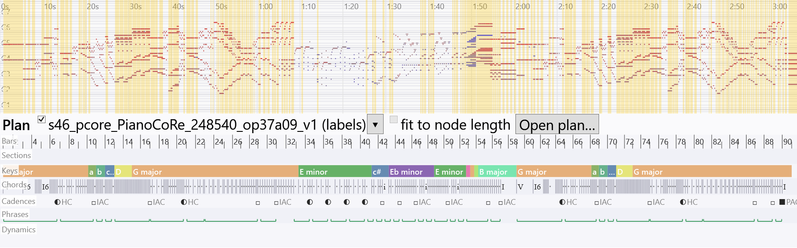

Tour 1: a real piece
Tchaikovsky, September (The Hunt). Open project Mazurka, select n2, and follow along. About twenty minutes.
The plan: look first, guess the form, then check the guess with each view, and at the end compare with what the experts wrote.
1. Waveform and piano roll
Before any analysis: what is the rough shape?


Guess: three parts, with the third like the first.
2. Chromagram (C)
What sounds when?

The first bars and the bars from 2:00 look alike; the middle uses other notes (B and C alternating, hardly any D). The guess gets stronger: the third part is the first one in the same key.
3. Self-similarity matrix (M)
Does it really come back, and all of it?

123- The stripe: the whole first section, again, from 2:00.
- Nothing from the first section appears in the middle part.
- The middle part repeats its own short idea at first.
The stripe is unbroken and parallel to the diagonal: everything returns, in order, at the same speed. Its first seconds are thick and blurred: on one long held note there is little to line up.
Click on the stripe, listen; Shift+click the same spot, listen. You should hear the same music twice.
4. Scape plot (T)
If I could keep one section, which one?

Press Play segment. Change min length to 20 and 30: nothing moves. The section is real, not a loop.
Notice that the program picked the return, not the first statement. For it they are the same; the ring simply landed on the one with slightly better numbers.
5. Novelty (N)
Where are the seams?

123- 1:09, bar 33, persistence 13/13.
- 2:00.5, bar 59, the strongest, 13/13.
- 1:26, bar 41: a seam inside the middle part.
Set the scale to 8 s, then 2 s. The two great seams stay, and the small ones multiply.
6. Aspect stack (K)
Seams of what?
 12
12- 1:09: texture, dynamics, loudness and timbre are at their highest.
- 2:00: harmony is at its highest; dynamics and timbre are silent.
This is the point of having aspects. The middle part is announced by a change of sound. The reprise is announced by harmony: the loudness had already come back at about 1:50.
7. Raw aspect (R)
What does each aspect look like itself?



8. Plan lane (P)
Was I right?

Bar 33 is 1:09.1 and bar 59 is 2:00.5. The program's two strongest boundaries are at 1:09.0 and 2:00.5. It did not know the score.
The experts also show what the program cannot: that the piece ends with its only perfect cadence, that the middle part hangs on half cadences, and what the chords do.
Read more
- DCML's annotated edition of Tchaikovsky's The Seasons, the source of the September labels (CC BY-NC-SA 4.0)
- Paulus, Müller and Klapuri, Audio-based music structure analysis, ISMIR 2010 (PDF): repetition, novelty and homogeneity side by side
- The FMP notebooks: the book's free companion, with code, pictures and sound